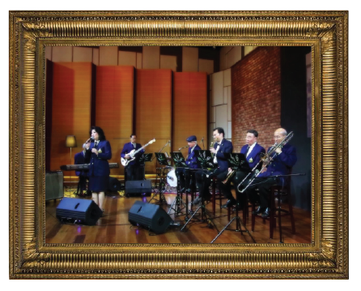

วงดนตรี อ.ส. วันศุกร์ หรือ อัมพรสถานวัน ศุกร์ เป็นวงดนตรีใน พระบาทสมเด็จ พระเจ้าอยู่หัวได้ชื่อนี้มาจากการที่เล่นออกอากาศ ทางสถานีวิทยุ อ.ส. อัมพรสถาน ในทุกเย็นวัน ศุกร์ ณ พระที่นั่งอัมพรสถาน พร-ราชวังดุสิต พระบาทสมเด็จพระเจ้าอยู่หัวทรงพระกรุณา โปรดเกล้าฯ ให้เชิญพระราชวงศ์ผู้ใหญ่ที่ทรง คุ้นเคยและทรงเป็นนักดนตรีสมัครเล่น มารวม ตัวกันเพื่อตั้งเป็นวงดนตรีขึ้นเป็นครั้งแรก พระราชทานนามให้วงดนตรีนี้ว่า "วงลายคราม"
"ขณะที่ประทับ ณ พระที่นั่งอัมพรสถาน พระบาทสมเด็จพระเจ้าอยู่หัวทรงพระกรุณาโปรดเกล้าฯให้เชิญพระราชวงศ์ผู้ใหญ่ที่ทรง คุ้นเคยและทรงเป็นนักดนตรีสมัครเล่นมารวมตัวกันเพื่อตั้งเป็นวงดนตรีขึ้นเป็นครั้งแรกและแม้สมาชิกในวงจะไม่ใช่นักดนตรีอาชีพแต่พระบาทสมเด็จพระเจ้าอยู่หัวก็มีน้ําพระราชหฤทัย ที่เต็มเปี่ยมไปด้วยพระมหากรุณาธิคุณเพราะแม้นักดนตรีจะเล่นแบบผิดๆถูกๆในบางครั้งเพราะความไม่ชํานาญ แต่พระองค์ก็มิทรงเคยเห็นสิ่งเหล่านี้เป็นเรื่องสําคัญแต่กลับพอพระราชหฤทัยที่จะแนะนําและเอาใจนักดนตรีสมัคร เล่นเหล่านั้นให้ครื้นเครงอยู่เสมอ ซึ่งเมื่อโปรดเกล้าฯให้ตั้งสถานีวิทยุ อ.ส. (อัมพรสถาน)ขึ้น เมื่อปี พ.ศ.๒๔๙๕ เพื่อเป็นสื่อกลางในการให้ความบันเทิงสารประโยชน์และข่าวสารต่างๆแก่ประชาชน จึงพระราชทานนามให้วงดนตรีนี้ว่า "วงลายคราม"
พระบาทสมเด็จพระเจ้าอยู่หัวทรงเห็นว่าวงลายคราม มีนักดนตรีซึ่งเป็นเป็นพระราชวงศ์ ผู้ใหญ่สูงอายุมากยิ่งขึ้น บางครั้งเล่นดนตรีประเภทเครื่องเป่าไม่ค่อยถนัดแล้ว พระองค์จึงโปรดเกล้าฯให้นักดนตรีหนุ่มๆมาผสมวงเล่นร่วมกับองลายคราม จึงเกิดเป็นวงดนตรี อ.ส วันศุกร์ขึ้นพระบาทสมเด็จพระเจ้าอยู่หัวทรงแซกโซโฟนเป็นนายวง

พระบาทสมเด็จพระเจ้าอยู่หัวทรงพระราชนิพนธ์เพลงพระราชนิพนธ์ศุกร์สัญลักษณ์ {Friday Night Rag} พระราชทานเป็นเพลงประจําวงดนตรี อ.ส.วันศุกร์ พระบาทสมเด็จพระเจ้าอยู่หัวทรงเป็นศิลปินผู้เพียบพร้อมด้วยพระปรีชาสามารถในการสร้างสรรค์ดนตรี เมื่อเสด็จนิวัตประเทศไทยใน พ.ศ. ๒๔๙๕ แล้วประทับที่พระที่นั่งอัมพรสถานพระราชวังดุสิต เพราะระหว่างนั้นมีการก่อสร้างเพิ่มเติมพระตําหนักจิตรลดารโหฐานได้ทรงรวบรวมพระประยูรญาติบางองค์และคนสนิทมาเล่นดนตรี กันและพระราชทานชื่อวงนี้ว่า "วงลายคราม" ขึ้นเป็นวงดนตรีส่วนพระองค์วงแรก
ในปี พ.ศ. ๒๔๙๕ กรมประชาสัมพันธ์ได้ น้อมเกล้าฯ ถวายเครื่องส่งวิทยุกําลังส่ง 900 วัตต์ ซึ่งมีทั้งคลื่นสั้นและคลื่นยาว พระบาท สมเด็จพระเจ้าอยู่หัวจึงทรงตั้ง "สถานีวิทยุ อส " ขึ้นที่พระที่นั่งอัมพรสถาน (ตัวอักษรย่อของ อ.ส. ทรงนํามาจากคําว่าพระที่นั่งอัมพรสถาน) เพื่อใช้เป็นสื่อกลางให้ความบันเทิงและสาระ ประโยชน์ ตลอดจนข่าวสารต่างๆ แก่ประชาชน ปัจจุบันสถานีวิทยุ อ.ส. ได้ย้ายมาตั้งในบริเวณ สวนจิตรลดา พระราชวังดุสิต ต่อมา มีการ ปรับปรุงวงดนตรีลายคราม เนื่องจากนักดนตรี กิตติมศักดิ์เหล่านั้นเริ่มทรงพระชรามากขึ้น ไม่สามารถมาร่วมเล่นดนตรีได้อย่างเต็มที่จนเหลือแค่พระบาทสมเด็จพระเจ้าอยู่หัวและนายแมนรัตน์ศรีกรานนท์ เท่านั้น
นายแมนรัตน์ จึงได้ขอพระราชทานพระบรมราชานุญาตหานักดนตรีเข้ามาถวายงานเพิ่มเติม จนครบวงให้สามารถเล่นต่อไปได้ ต่อมาจึงได้ รับพระราชทานชื่อวงใหม่นี้ว่า "วงดนตรี อ.สวัน ศุกร์" พระบาทสมเด็จพระเจ้าอยู่หัวทรงดนตรีกับ วง อ.ส.วันศุกร์ บรรเลงออกอากาศทาง สถานีวิทยุ อ.ส.เป็นประจําทุกวันศุกร์ ทรงจัด รายการเพลง และทรงเลือกแผ่นเสียงเองบางครั้งโปรดเกล้าฯ ให้ผู้ฟังโทรศัพท์ขอเพลงจาก วงดนตรีที่กําลังบรรเลงได้ด้วย ปัจจุบันนี้ วง ดนตรี อ.ส. วันศุกร์ มีอายุ ๕๐ ปีเต็มย่างเข้า ๕๑ ปีแล้ว